Homeostasia por máquina. A TRS restaura o meio interno por
mecanismos físicos — sem células, sem hormônios. As Fig. 1–13 voltam no Caso, na Trilha e na Avaliação.
Atribuição em CREDITS.md (em curadoria).
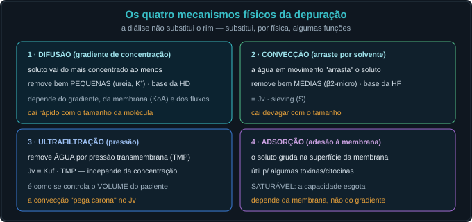
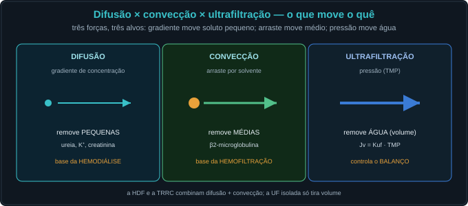
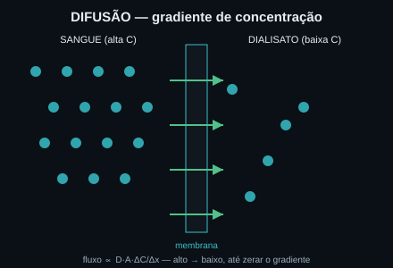
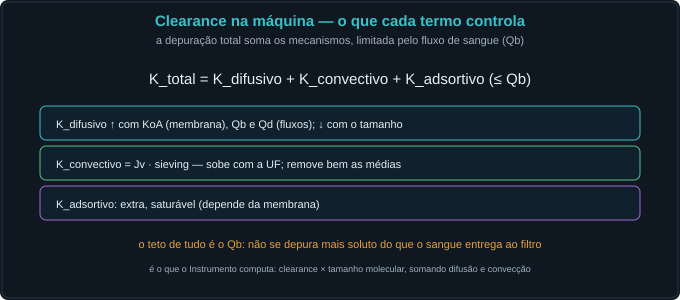
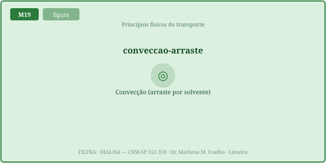
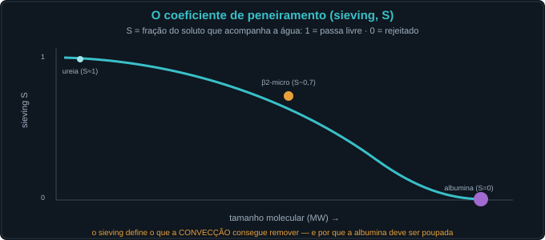
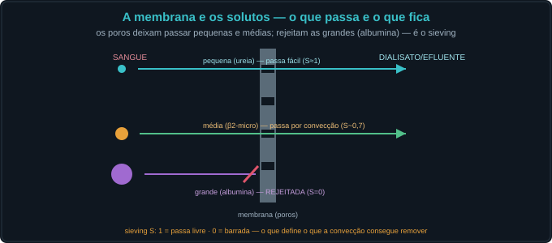
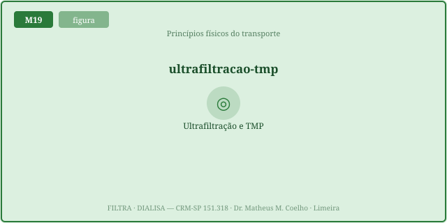
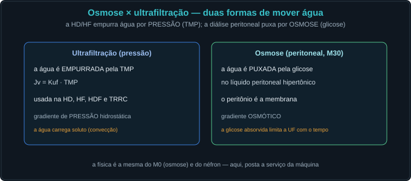
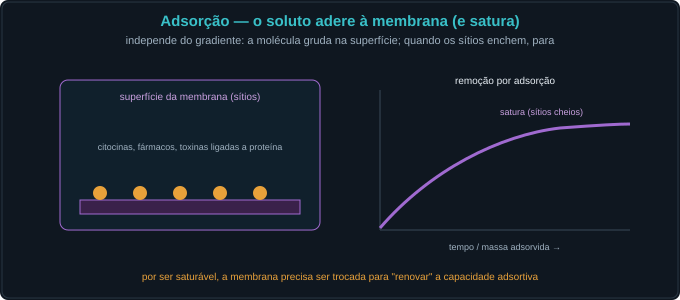
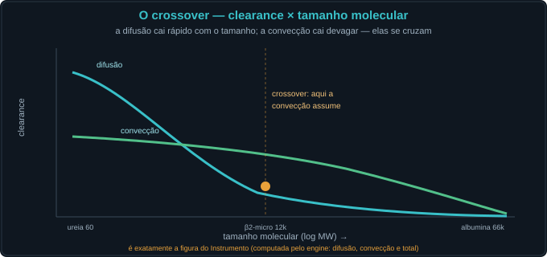
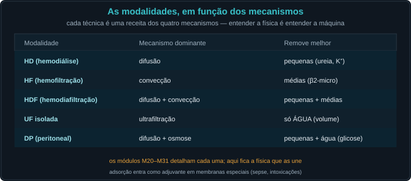
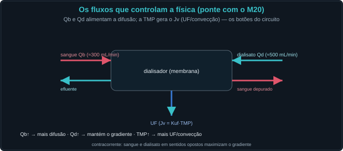
Paciente em diálise crônica há anos. Ureia controlada, mas com síndrome do túnel do carpo e dores — suspeita de amiloidose por β2-microglobulina (molécula média).
Não — substitui, por física, ALGUMAS funções (depuração e volume). Não há hormônios nem regulação fina.
Movimento do soluto a favor do gradiente de concentração (sangue → dialisato). Base da hemodiálise.
Moléculas PEQUENAS (ureia, K⁺, creatinina); o clearance difusivo cai rápido com o tamanho.
Arraste do soluto pela água em movimento ("solvent drag"); clearance = Jv·sieving. Base da hemofiltração.
Moléculas MÉDIAS (β2-microglobulina); cai devagar com o tamanho.
Remoção de ÁGUA por pressão: Jv = Kuf·TMP. Independe da concentração; controla o volume.
A fração do soluto que acompanha a água: 1 = passa livre, 0 = rejeitado (albumina).
O soluto adere à membrana (independe do gradiente); saturável — a capacidade esgota.
O MW em que a convecção passa a remover mais que a difusão (a difusão cai mais rápido).
O KoA (membrana), os fluxos Qb e Qd, e o tamanho da molécula. Tudo limitado pelo Qb.
Kuf alto (mais Jv/convecção) e poros maiores (sieving maior para as médias).
HD = difusão; HF = convecção; HDF = ambas; UF = só volume; DP = difusão + osmose.
Qb/Qd (difusão) e TMP/Kuf (UF e convecção) — os botões da máquina (M20).
A curva difusiva (cai rápido) cruza a convectiva (cai devagar). Mova o tamanho da molécula no Lab e veja qual mecanismo domina; aumente a TMP/Kuf e a curva convectiva sobe.
| Grandeza | Atual | Comentário |
|---|---|---|
| Sieving (S) | — | 1 passa · 0 rejeita |
| Jv — ultrafiltração (mL/min) | — | Kuf·TMP |
| Clearance difusivo (mL/min) | — | pequenas |
| Clearance convectivo (mL/min) | — | médias |
| Clearance total (mL/min) | — | ≤ Qb |
| Mecanismo dominante | — | — |